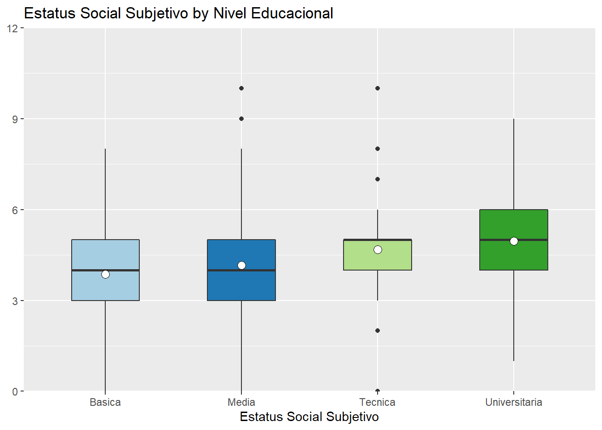
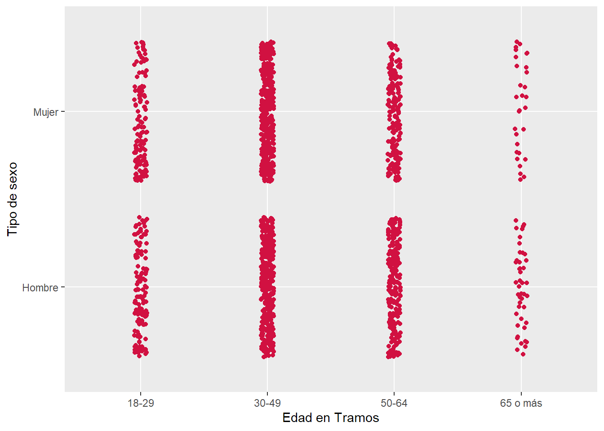

Capítulo 4 Herramientas para la transparencia y la reproducibilidad
4.1 Preregistros
4.1.1 Algunas cosas sobre los preregistros
Los preregistros son una marca temporal sobre las decisiones del diseño, el método y el análisis de un artículo científico y se suelen hacer antes del levantamiento de datos (Stewart et al. 2020). Básicamente, preregistrar un artículo o un proyecto implica que un grupo de investigadores dejarán por escrito una pauta de investigación a la cual se atendrán lo más posible cuando desarrollen la investigación, especialmente la recopilación y el análisis de los datos. Ahora ¿por qué habría de hacer algo así? Llevar a cabo una investigación ya es lo suficientemente complejo como para añadirle una tarea adicional. La respuesta es que, cómo señalamos en secciones anteriores, los preregistros son una herramienta que permite hacerle frente a las QRP y, a la larga, contribuir a la realización de una ciencia de mayor calidad.
Ciertamente, los preregistros no son la respuesta a cada una de las QRP existentes, pero si son una herramienta eficaz para evitar las más frecuentes. En secciones anteriores hablamos de los sesgos de publicación, el p-hacking y el HARKing pues, cada uno de ellos puede ser evitado a partir de un preregistro. Primero, vimos que el sesgo de publicación se trataba de publicar selectivamente los resultados de investigación: resultados que no hayan sido significativos, o hipótesis que “no funcionaron” simplemente se omiten. Sin embargo, cuando existe un documento como un preregistro, el cual deja estipulado claramente las hipótesis que deben ponerse a prueba y los análisis que se emplearan para ello, se torna más difícil reportar selectivamente los resultados. Dicho de otra forma, cuando existe una pauta a la cual apegarse, la discrecionalidad en el reporte de los resultados disminuye. En el caso del p-hacking, el efecto del preregistro es parecido. Cómo vimos, el p hacking consistía en abusar de las pruebas estadísticas para obtener resultados significativos. “Abusar” en el sentido de buscar toda vía posible para obtener un valor p que confirme las hipótesis planteadas. El hecho de preregistrar el plan de análisis y el procesamiento que se le efectuara a las variables permite evitar este tipo de búsqueda intencionada: como hay una guía que seguir, cualquier desviación debe ser justificada. En esta misma línea, un preregistro evita el HARKing ya que las hipótesis están previamente planteadas y no es posible cambiarlas una vez que se han visto los resultados. En suma, el plantear un registro a priori de la investigación, disminuye la flexibilidad que suele dar paso a las QRP.
Si bien los preregistros pueden ser una herramienta en contra de las QRP, existen resquemores de los que es preciso hacerse cargo. Una de las principales preocupaciones es que el uso de preregistros tendería a coartar la creatividad y la producción de conocimiento exploratoria (Moore 2016). La lógica es que, como cada parte de la investigación debe ser registrada detalladamente previo a la recopilación, no queda espacio para la espontaneidad durante el análisis de datos. Nada puede estar más lejos del sentido de un preregistro. Más que inhibir la investigación exploratoria, el objetivo de especificar una pauta a priori es poder separar lo que es la investigación confirmatoria (pruebas de hipótesis) y la exploratoria (generación de hipótesis) (Brian A. Nosek et al. 2018). En ese sentido, es posible la investigación exploratoria bajo el modelo de preregistros, solo que hay que especificarla como tal. Una segunda creencia es que realizar un preregistro añade un nivel de escrutinio mayor del necesario, es decir, como se conoce cada detalle, la investigación se vuelve un blanco fácil de críticas. Sin embargo, la situación es todo lo contrario (Moore 2016), por ejemplo, haber preregistrado un plan de análisis para una regresión logística binaria con datos que originalmente eran ordinales hará más creíble los resultados, ya que quienes evalúen la investigación tendrán pruebas de que el nivel de medición no se cambió solo para obtener resultados significativos. Una tercera idea en torno a los preregistros es que conllevan una gran inversión de tiempo y energía. Si bien es cierto que se añade un paso más al proceso de investigación, el avance en la temática ha logrado que existan una variedad de plantillas que hacen el proceso más rápido y eficiente. Desde una lógica racional, el tiempo que toma este paso nuevo en la investigación es un costo bajo en contraste a los beneficios que trae.
Una característica principal de los preregistros es que deben ser efectuados previo a la recolección de datos. Este requisito es lo que permite asegurar la credibilidad de los resultados, ya que, si no hay datos que alterar, entonces las probabilidades de que ocurra una QRP son básicamente nulas. Generalmente, para las ciencias médicas o la psicología experimental (disciplinas donde cada vez se usan más los preregistros), esto no suele ser un problema ya que se utilizan diseños experimentales. Los diseños experimentales se apegan al método científico clásico: se plantean hipótesis basadas en la teoría, se diseña un experimento para probar esas hipótesis y luego se recopilan y analizan los datos para ver si dan soporte a las hipótesis planteadas. Sin embargo, ¿qué ocurre cuando trabajamos con datos preexistentes? En muchas disciplinas de las ciencias sociales los diseños experimentales son una pequeña fracción del conjunto de la literatura (e.g. según Card, DellaVigna, y Malmendier 2011 en 2010, un 3% de los artículos en las mejores revistas de economía eran experimentales), donde lo que prima son los diseños observacionales, los que suelen trabajar con datos administrativos o generados a partir de censos o encuestas. A diferencia de los estudios experimentales, los cuales deben generar de primera fuente el experimento que les permita testear sus hipótesis, en los estudios observacionales se utilizan datos ya existentes, lo cual afecta al principal componente de credibilidad de los preregistros: nada puede asegurar que los datos fueron analizados antes de la escritura del preregistro y que, por ejemplo, las hipótesis se están planteando una vez conocidos los patrones significativos (HARKing). De ahí que nace la pregunta sobre la posibilidad (y la utilidad) de utilizar preregistros en estudios con datos preexistentes.
En la literatura sobre preregistros se han discutido los desafíos que implica preregistrar estudios que utilicen datos preexistentes (e.g. Editors 2014). Existen posturas que proponen que, en realidad, no existe una forma creíble para preregistrar este tipo de estudios (G. Christensen y Miguel 2018). No obstante, otras posturas han profundizado en las situaciones en las que aún es posible preregistrar estudios con datos elaborados previamente. Burlig (2018) propone tres escenarios donde el preregistro de datos observacionales es valioso. El primero es, básicamente, cuando los investigadores que diseñaron la investigación generan sus propios datos, en este caso, los investigadores sí pueden elaborar un preregistro previo a la recolección de datos. El segundo escenario se da cuando se preregistra un estudio que tiene como objeto de interés un suceso que aún no ha ocurrido, lo que se conoce como estudios prospectivos. Por ejemplo, un grupo de investigadores puede estar interesado en el efecto que tendrá la introducción de una ley en las prácticas sociales, o el efecto de un tratado en las variaciones del PIB. Para esos casos, el preregistro aún mantiene su validez original ya que, si bien los datos ya existen, no es posible hacer los análisis antes del preregistro porque el evento de interés no ha ocurrido. El tercer escenario ocurre cuando los datos existen, pero no están abiertos al público. En estos casos, es la accesibilidad lo que determina la credibilidad del preregistro. Por ejemplo, el grupo de investigadores que elaboraron los datos pueden establecer que serán accesibles con previo contacto y que se solicitará un preregistro. Por ende, en orden de analizar los datos, los investigadores interesados deberán elaborar un preregistro para utilizar los datos. Según Mertens y Krypotos (2019), también se pueden adoptar ciertas prácticas para asegurar la credibilidad de un preregistro con datos secundarios. Dos de ellas son: que el grupo de investigadores que analiza los datos sea distinto e independiente de quien propuso el diseño de investigación y que el equipo realice sintaxis de análisis con datos simulados, con tal de demostrar que las hipótesis ya existían previas a acceder a los datos. En suma, lo que permite mantener el efecto “puro” de un preregistro, es que los datos no hayan sido observados por ningún integrante del grupo de investigación que los analizará (Brian A. Nosek et al. 2018).
El principio básico de un preregistro entonces es que los datos no deben haber sido observados previos al análisis. Sin embargo, según Brian A. Nosek et al. (2018) aún pueden existir ciertos sesgos en el planteamiento de hipótesis a raíz de cosas como el reporte de resultados descriptivos de la base de datos o las recomendaciones sobre cómo aproximarse a la base de datos. Este tipo de influencias son un poco más sutiles y es difícil deshacerse completamente de ellas. Es por esto que, quizás la recomendación más transversal y a la vez simple para preregistrar análisis con datos secundarios, es ser sincero y detallado respecto a lo que se ha hecho y lo que no (Brian A. Nosek et al. 2018). Si es que se ha leído el reporte descriptivo sobre la base de datos, estipularlo como tal. Es preciso transparentar cualquier tipo de aproximación a los datos previo haberlos analizados. Para lograr este nivel de detalle y ser eficiente con los tiempos y la comunicación hacia otros investigadores, es que existen plantillas predeterminadas para preregistrar distintos tipos de artículos. A continuación, describiremos algunas de las más usadas.
4.1.2 Manos a la obra: cómo utilizar un preregistro
En la práctica, preregistrar un artículo es básicamente sintetizar la información importante sobre nuestra investigación en una plantilla estandarizada y alojar ese documento en un lugar público. Por lo que el primer paso para elaborar un preregistro es elegir la plantilla correcta. Existen plantillas estandarizadas, que están estructuradas de tal forma que son útiles para preregistrar estudios de cualquier disciplina, así como también existen plantillas dedicadas a una disciplina o un conjunto de ellas. En la Tabla N° 4.1 se pueden ver algunas de las plantillas más usadas según Stewart et al. (2020). Primero está el conjunto de plantillas que ofrece el Open Science Framework (OSF) dependiendo de las características específicas del estudio. Luego, encontramos a la plantilla de AsPredicted que se caracteriza por su simpleza: son solo nueve preguntas que buscan recopilar la información sustancial para el preregistro de un artículo. También, están las plantillas de PROSPERO, ISRCTN y Bio-Protocol que se utilizan más en el campo de las ciencias biológicas o médicas. PROSPERO se focaliza en artículos de tipo review que tengan relación con la medicina, en tanto IRCTN busca ser una primera instancia de registro para ensayos clínicos. Bio-Protocol por su parte busca dejar el registro de protocolos detallados en la investigación biológica, con tal de complementar la sección de Método en los artículos. Las plantillas de AEA RCT, RIDIE y EGAP están más relacionadas a las ciencias sociales y áreas afines. La AEA RCT se focaliza en diseños experimentales para ciencias sociales, en tanto RIDIE es una herramienta para evaluaciones de impacto. EGAP busca ser una plantilla específica para temas de gobernanza y política. Como podemos ver, todas las plantillas tienen su campo de aplicación, sin embargo, aquí nos centraremos en las dos más universales y conocidas: OSF y AsPredicted.
| Plantilla | Proposito | Discplina/Área |
|---|---|---|
| Open Science Framework (OSF) Pre-registration | Múltiples plantillas para preregistrar una amplia gama de estudios | Cualquiera |
| AsPredicted | Plantilla de preregistro estandarizada | Cualquiera |
| PROSPERO | Registros de protocolos de estudio para revisiones sistemáticas con un resultado relacionado con la salud | Salud y asistencia social, bienestar, salud pública, educación, delincuencia, justicia y desarrollo internacional |
| International Standard Randomised Controlled Trials Number (ISRCTN) | Registro de ensayos clínicos primarios reconocido por la OMS y el ICMJE | Cualquier estudio de investigación clínica |
| Bio-Protocol | Revista de protocolos en línea revisada por pares que pone a disposición de los interesados protocolos detallados en línea | Ciencias biológicas |
| American Economic Association Registry For Randomized Controlled Trials (AEA RCT) | Registro de ensayos controlados aleatorios | Economía, ciencias políticas y otras ciencias sociales |
| Registry for International Development Impact Evaluations (RIDIE) | Registro prospectivo de evaluaciones de impacto de políticas y programas de desarrollo en países de renta baja y media | Ciencias sociales |
| Evidence in Governance and Politics (EGAP) | Registro de experimentos y estudios de observación | Gobernanza y política |
Como bien se ha señalado en otras partes de este libro, el Open Science Framework (OSF) es tanto una herramienta para la colaboración, que permite hacer públicos distintos tipos de proyectos; como un modelo de flujo de trabajo que hace más eficiente el proceso de investigación al centralizar herramientas como GitHub, Google Docs etc. Dentro de estas funciones se encuentra la el servicio de preregistros. En la línea de lo que hemos señalado hasta ahora, con este servicio OSF busca fomentar la transparencia y reproducibilidad en la investigación. Vamos viendo paso a paso como ingresar un preregistro en OSF.
El primer paso es acceder a la sección especifica de preregistros de la página de OSF, la cual se encuentra en el siguiente link: https://osf.io/prereg/. Para usar este servicio es necesario tener una cuenta, cuestión que no profundizaremos aquí. Si entramos al link con una cuenta recién hecha, la apariencia de la página será algo como la Figura N° 4.1. En la página veremos una barra superior con opciones asociadas a la cuenta y en el centro veremos un gran botón azul con forma rectangular el cual nos da la opción de comenzar un preregistro. En el caso de acceder con una cuenta que ya tiene proyectos, OSF nos dará la opción de preregistrar un proyecto ya existente. Seleccionemos Start a new preregistration, le damos un nombre y hacemos click en Continue, lo que nos llevará a la siguiente página, representada en la Figura N° 4.2. En la página, podemos ver que hemos creado un proyecto nuevo en OSF, el cual nos da la opción de preregistrarlo haciendo click en el botón New registration.

Figura 4.1: Preregistros en OSF

Figura 4.2: Preregistros en OSF 2
En la Figura N° 4.3 podemos ver dos cosas. Primero, la descripción de lo que está haciendo OSF al comenzar un nuevo preregistro, lo que en pocas palabras es una versión no modificable del proyecto al momento que hacemos el preregistro. Tal y como dice la página es una versión “congelada”. En segundo lugar, también se aprecia una serie de opciones para preregistrar, estas son las plantillas que habíamos mencionado anteriormente. OSF nos ofrece distintas plantillas de acuerdo con el carácter que tiene nuestro estudio. Una breve descripción de cada una es la siguiente:
OSF Preregistration: Es la plantilla estándar, en la cual se hacen una serie de preguntas relativas al muestreo, diseño y planes de análisis.
Open-Ended Registration: Consiste en una síntesis narrativa de la investigación a preregistrar. No hay un minimo de palabras para el documento.
Qualitative Preregistration: Plantilla elaborada por la comunidad de investigadores cualitativos para preregistrar estudios cualitativos.
Secondary Data Preregistration: También consiste en una serie de preguntas relativas al muestro, diseño y planes de análisis, con algunas pequeñas variaciones.
Registered Report Protocol Preregistration: Hace unas cuantas preguntas relativas al estudio y permite adjuntar el manuscrito. Esta plantilla se utiliza cuando se está intentando publicar en una revista que adhiere al modelo de Registered Reports.
OSF-Standard Pre-Data Collection Registration: Plantilla que sigue el modelo estándar, pero que agrega algunas preguntas más específicas sobre recolección de datos. Por ejemplo, pregunta si la recolección de datos está en curso o si se ha hecho algún análisis de los datos hasta ahora.
Preregistration Template from AsPredicted.org: Plantilla estandarizada de AsPredicted. Simplifica el proceso de preregistro en 9 preguntas clave sobre el estudio.
Replication Recipe (Brandt et al., 2013): Post-Completion: Se trata de una plantilla para estudios de replicación, específicamente estudios que ya finalizaron.
Replication Recipe (Brandt et al., 2013): Pre-Registration: Se trata de una plantilla para estudios de replicación que aún no han comenzado.
Pre-Registration in Social Psychology (van ’t Veer & Giner-Sorolla, 2016): Pre-Registration: Plantilla de preregistro para estudios específicamente de la subdisciplina Psicología Social.

Figura 4.3: Preregistros en OSF
De todas estas plantillas veremos el detalle de tres de ellas: OSF Preregistration, Secondary Data Preregistration y Preregistration Template from AsPredicted.org.
Una vez escojamos una plantilla, la página se verá como la Figura N° 4.4. Esta sección es transversal a todas las plantillas y consiste en el registro de los metadatos. Específicamente, OSF nos solicitará que registremos:
- Título del preregistro
- Una breve descripción
- Contribuyentes
- La categoría. Generalmente está en categoría Project, pero dependiendo de lo que estemos preregistrando, podemos cambiarlo a Data, Software, Analysis, entre otros.
- Areas discplinares, como Arts and Humanities, Business, Social and Behavioral Sciences entre otras.
- Tags. Los tags sirven para facilitar la búsqueda del preregistro

Figura 4.4: Metadatos para preregistros
4.1.2.1 OSF Preregistration
Esta plantilla incluye ocho tópicos para rellenar con la información del estudio, estos son:
Información del estudio: Principalmente solicita listar de forma concisa y detallada las hipótesis que serán puestas a prueba. Se solicita reportar si la hipótesis es direccional o no, y en el caso de serlo, especificar el sentido de la dirección. Si el estudio incluye moderaciones o mediaciones, plantearlas en hipótesis aparte.
Plan del diseño: En esta sección se hacen cuatro preguntas importantes. La primera es sobre el tipo del estudio, donde se solicita especificar si el estudio es de tipo experimental, observacional, un metaanálisis u otro. En segundo lugar, está el blinding, el cual trata sobre quienes están en conocimiento de las condiciones de tratamiento en el caso de un diseño experimental. En el caso de un diseño experimental no aplica. En tercer lugar, se pregunta sobre el diseño del estudio, donde se solicita la mayor cantidad de detalles posibles respecto a este tópico. Por último, se solicita especificar cuál será el tipo de aleatorización (en el caso de un diseño experimental).
Plan del muestreo: En esta sección, la plantilla requiere rellenar información respecto a la existencia de datos, los procedimientos de recolección de datos y sobre el tamaño de la muestra. En el caso de la existencia de datos, se nos solicita que marquemos de las siguientes situaciones la que más se acerca al estado de nuestro estudio:
- Registro previo a la creación de datos
- Registro previo a cualquier observación humana de los datos
- Registro previo a acceder a los datos
- Registro previo al análisis de los datos
- Registro tras el análisis de los datos
En el caso de trabajar con datos existentes la plantilla da una opción para detallar los pasos necesarios que se han tomado para asegurar que no conocemos el comportamiento de los datos. Por ejemplo, cómo es que se ha limitado la accesibilidad de los datos, o quiénes han revisado los datos y quienes no.
En lo que respecta a los procedimientos de análisis, la plantilla solicita especificar cómo es que se han recolectado los datos y cuáles han sido los criterios de exclusión. En el caso de muestras que involucren seres humanos, se deben reportar todo tipo de incentivos a la participación. Por último, se pregunta por el tamaño de muestra y si se ha realizado algún análisis de poder estadístico
Variables: En esta sección se preguntan tres cosas. La primera es sobre, en el caso de los estudios experimentales, cómo se manipularán los niveles de tratamiento de las variables. Segundo, la plantilla requiere especificar cómo es que se medirán las variables, tanto la variable dependiente como los predictores. En tercer lugar, en el caso de construir índices, se pide detallar lo más posible su construcción.
Plan de análisis: En esta sección se busca el mayor detalle posible para le plan de análisis con tal de que sirva de guía para la reproducción o replicación del artículo. Partiendo por los modelos estadísticos, la plantilla solicita especificar la herramienta principal de análisis de datos (e.g. regresión múltiple) en conjunto a las variables que se incluirán (dependientes, independientes, controles, términos de interacción etc.). Otro componente importante para especificar son las transformaciones a los datos, incluyendo recodificaciones, centrados o cualquier procedimiento que cambie el formato original de la variable. También, la plantilla solicita especificar cuáles serán los criterios de inferencia estadística (e.g. valores p o intervalos de confianza). Por último, la plantilla requiere especificar cómo se determinará la exclusión de datos, cómo se trabajarán los datos perdidos y detallar los análisis exploratorios en caso de que existiesen.
Otro: Esta es la última sección de la plantilla, donde se da la opción al investigador o investigadora de añadir cualquier información importante que hasta ahora no ha sido reportada.
4.1.2.2 Secondary Data Preregistration
Esta plantilla es similar a la que acabamos de revisar, la principal diferencia es que está enfocada en el preregistro de datos secundarios, por lo que todas las opciones que veíamos en la plantilla general de OSF que hacían referencia a datos primarios ya no existen. Recomendamos esta plantilla a investigadores que usen datos secundarios ya que hace más simple el proceso de preregistro al enfocarse en las preguntas que realmente se asemejan a la situación del investigador.
La plantilla se compone de siete puntos. El primero también consiste en especificar los metadatos del estudio, como por ejemplo en nombre del proyecto, el área del conocimiento en el que se circunscribe etc.
Información del estudio: Básicamente implica especificar las preguntas y las hipótesis que orientan el estudio.
Descripción de los datos: Esta sección es característica de esta plantilla, ya que nos pregunta directamente sobre características de la base de datos a utilizar. En detalle, recaba información sobre el nombre de la base de datos, una descripción general de ella y cuál será el subconjunto de datos en caso de que corresponda. También se solicita especificar qué tipo de base de datos es (e.g. longitudinal), si es que existen restricciones para el acceso y describir el procedimiento de elaboración de la base de datos. Por último, se nos solicita adjuntar el libro de códigos correspondiente y si este no existe, adjuntar cualquier archivo de la base de datos que permita conocer su composición.
Variables: En esta sección las preguntas no son muy distintas de la plantilla que acabamos de revisar. En general, se solicita especificar la manipulación de las variables (no aplica para estudios observacionales), la forma de medición de las variables, la unidad de análisis y cuáles serán los procedimientos para tratar con casos perdidos y extremos.
Conocimiento de los datos: Esta sección es característica de esta plantilla. A grandes rasgos, se nos pide dos cosas. Primero, que listemos los documentos con los cuales hayamos trabajado y que estén basados en la base de datos que utilizaremos (e.g. publicaciones, working papers, presentaciones de conferencia). Segundo, reportar cualquier conocimiento previo que tengamos del uso de la base de datos, especialmente las variables que sean relevante para el análisis propuesto. Este conocimiento de la base puede venir de publicaciones previas, de reportes de resultados o del libro de códigos, por dar algunos ejemplos.
Análisis: En esta sección se pregunta sobre toda característica de nuestro análisis de datos, partiendo por el tipo de modelos estadístico que utilizaremos para probar las hipótesis. Se nos solicita que por cada hipótesis detallemos la herramienta de análisis. Luego, se nos preguntan detalles cómo: el tamaño de efecto de interés para nuestro análisis, el poder estadístico, los criterios de inferencia (e.g. valores p o factores bayesianos), las pruebas de robustez que se efectuarán y si es que realizaremos algún tipo de análisis exploratorio.
4.1.2.3 AsPredicted
La plantilla de AsPredicted es quizás una de las más conocidas para hacer preregistros, dado que está estandarizada y puede ser utilizada en cualquier disciplina. Esta plantilla la podemos encontrar tanto en OSF, como en la misma página de AsPredicted, en este caso, mostraremos cómo es el proceso en la página original.
Partimos por entrar a la página de AsPredicted, donde veremos algo como la Figura N° 4.5. Acá se nos da la opción de crear un preregistro, de ver los que ya hemos hecho (si es que ese es el caso) y también una breve descripción de AsPredicted. A grandes rasgos, la página nos dice que AsPredicted es una plataforma que busca facilitar el preregistro de estudios por parte de los investigadores a través de nueve simples preguntas. La página genera un documento .pdf y una URL asociada. También, cuenta cómo funciona el preregistro. Básicamente, un autor elabora un preregistro de un estudio y los coautores reciben un mail para aprobar ese preregistro. Una vez aprobado por todos los autores, el preregistro queda alojado en la plataforma de manera privada, y no cambia hasta que un autor decida hacerlo público. Además, en caso de que el estudio entre en revisión por pares, se puede enviar una versión anónima del preregistro. Por último, nos entrega una recomendación sobre qué hacer en el caso de que el proceso de investigación no haya podido apegarse totalmente a lo predicho.

Figura 4.5: Página de inicio de AsPredicted
Para elaborar un preregistro debemos hacer click en el rectángulo azul que dice Create. Una vez hecho eso, nos pedirá una dirección de email para continuar. Cuando ingresemos un email, nos enviará un enlace al email que hayamos ingresado, con ese enlace podremos comenzar el preregistro. Una vez hayamos entrado en el enlace, veremos la plantilla de preregistro. Lo primero que aparece es una sección donde debemos escribir los emails de los autores colaboradores del estudio. También, nos da la opción de añadir otros emails además del que hemos introducido. Una vez pasada esta parte, ya nos encontramos con las preguntas del preregistro, las cuales son las siguientes:
- Recogida de datos. ¿Se han recogido ya datos para este estudio?
- Hipótesis. ¿Cuál es la pregunta principal que se plantea o la hipótesis que se pone a prueba en este estudio?
- Variable dependiente. Describa la(s) variable(s) dependiente(s) clave especificando cómo se medirán.
- Condiciones. ¿Cuántos y qué condiciones se asignarán a los participantes?
- Análisis. Especifique exactamente qué análisis realizará para examinar la pregunta/hipótesis principal.
- Valores atípicos y exclusiones. Describa exactamente cómo se definirán y tratarán los valores atípicos, así como su(s) regla(s) precisa(s) para excluir las observaciones.
- Tamaño de la muestra. ¿Cuántas observaciones se recogerán o qué determinará el tamaño de la muestra?
- Otros. ¿Hay algo más que quiera preinscribir?
- Nombre. Poner un título a este preregistro de AsPredicted Finalmente. A efectos de registro, indíquenos el tipo de estudio que está preinscribiendo.
Las preguntas son bastante auto explicativas, pero no está de más entregar algunos detalles adicionales. En la pregunta de recolección de datos, las opciones son tres: “Sí, se han recolectado datos”, “No, no se han recolectado datos” y “Es complicado”. Es importante mencionar que, en esta plantilla, la respuesta de que se han recolectado datos no es válida, por lo que si se está llevando a cabo un estudio con datos secundarios hay responder “Es complicado” y en la pregunta 8 de la plantilla especificar por qué este preregistro sigue siendo válido pese a que los datos son preexistentes. Otro detalle importante es que cada pregunta está pensada para ser respuesta en aproximadamente una oración. Esta plantilla tiene el objetivo de ser lo más eficiente posible, por lo que, en general, se recomienda que todo el documento no pase de los 3200 caracteres. Otro detalle que especificar es que la pregunta acerca del tipo de estudio que se está preregistrando también es semicerrada, tenemos las opciones de: “Proyecto de clase”, “Experimento”, “Encuesta”, “Estudio observacional” y “Otro”. Es responsabilidad de quien hace el preregistro el seleccionar la opción que más se asemeje a su situación. Por último, es importante señalar que el preregistro, al menos en la página de AsPredicted, solo puede ser rellenado en inglés, por lo que en caso de utilizar otro idioma solicitará traducirlo.
4.2 Flujos de trabajos reproducibles.
4.2.1 Introducción
Por un lado tenemos todos los materiales que nos facilitan la reproducibilidad en términos computacionales, no obstante, la mera existencia de estos elementos no nos garantiza que un proyecto sea reproducible per se, dado que es importante tener en consideración cómo se relacionan entre sí, para regenerar los resultados de un trabajo publicado.
Propósitos:
Primero, introducir un flujo de trabajo para los análisis reproducibles a través de un ejemplo práctico.
Segundo, ofrecer una guía de buenas prácticas referentes estándares de documentación de “inicio-a-fin” para una publicación en ciencias sociales (inspirado en Soup-to-Nuts de TIER).
Principios:
(i): Reproducibilidad: La documentación debe permitir regenerar completamente los resultados del estudio original. En primer lugar, se debe comenzar con los datos originales brutos idénticos a aquellos con los que el autor comenzó la investigación, Luego, la posibilidad de realizar las mismas rutinas de código para preparar los datos finales para el análisis. Finalmente, se debe disponer de las rutinas de código que permitan regenerar los mismos resultados publicados, por ejemplo, las tablas o figuras presentes en la investigación.
Independencia: Toda la información necesaria para regenerar los resultados del estudio debe estar presente en la documentación. Esto refiere a que no debe ser necesario solicitar ninguna información adicional al autor.
Realismo: La documentación debe estar organizada y presentada con suficiente claridad para que bajo un criterio realista, sea factible que un investigador independiente con un nivel de expertise razonable tenga la posibilidad de regenerar completa e independientemente los resultados del estudio sin mayores dificultades.
4.2.2 Estructura de carpetas y documentación
El esquema de trabajo se basa en la estructura de proyectos del Protocolo IPO. Adicionalmente, se tomarán en consideración los estándares propuestos por el Protocolo DRESS, principalmente en lo que refiere a la documentación de cada uno de los componentes del proyecto. Para ello, trabajaremos en base a tres secciones:
I. Input II. Procesamiento III. Output
4.2.2.1 Software
Siguiendo los principios orientadores para una ciencia abierta, el uso de software de código abierto es una dimensión que contribuye a la apertura de un proyecto de investigación, dado que no requiere la adquisición de un software de pago. Por este motivo, la propuesta de trabajo se realizará utilizando el paquete estadístico R.
4.2.3 Secciones de un proyecto
Debe ser pensado como un proyecto autocontenido, con una estructura de carpetas jerárquicas con archivos para cada función.
4.2.3.1 Nivel principal
Contenido
El nivel principal corresponde al nivel base donde se encuentra toda la documentación de referencia general para el proyecto. Primero, el objetivo de documentar este nivel es exponer ordenadamente el contenido del proyecto completo de manera jerárquica, es decir, el contenido de subcarpetas y su función. Segundo, se proveen orientaciones para conducir a una correcta ejecución de las rutinas que permitan regenerar los resultados de la investigación. Los contenidos principales son:
- Detalle del nivel principal y las subcarpetas organizadas según su contenido. Una manera amigable de representar esta estructura es a través de un “árbol de directorios”, el cual ilustra la jerarquía de las carpetas y los principales archivos contenidos.
repro-lisa/
│
│ readme.md
│ paper.Rmd
│
├───input: (archivos de datos y utilidades)
│ │
│ ├───bib (subcarpeta de input con documentos de bibliografía)
│ │
│ ├───data (subcarpeta de input con datos originales y procesados, junto con documentación)
│ │ ├───original (datos originales del estudio)
│ │ │ │
│ │ │ └───documentacion (documentación de datos originales)
│ │ │
│ │ └───proc
│ │ │
│ │ └───documentacion (documentación de datos procesados)
│ │
│ ├───images (subcarpeta de input con imágenes externas)
│ │
│ └───prereg (subcarpeta de input con documentación para preregistro)
│
├───procesamiento: (rutinas de código de preparación y análisis de datos)
│
└───output: (resultados de análisis en figuras y tablas)
├───imagenes (subcarpeta de output para guardar figuras)
│
└───tablas (subcarpeta de output para guardar tablas)Tip: Cómog enerar un directory tree automatizado en Windows,linux y MacOS
Instrucciones para la configuración (setup) del paquete estadístico necesario para ejecutar las rutinas de código. Esto considera el número de versión del software, los complementos necesarios que sean adicionales al paquete estándar y cualquier otra información especial sobre el software que el lector necesite conocer para reproducir los resultados del estudio.
Instrucciones de “inicio-a-fin” para regenerar los resultados a través de referencias directas al uso de los archivos de procesamiento de datos en la preparación y análisis. En este apartado se incluye el detalle de los objetivos de cada rutina de código de manera independiente.
Presentación
Los contenidos descritos se deben incluir en un archivo que lleve de nombre “readme.md/txt/pdf”. Una sugerencia de estructura interna de este documento es la siguiente:
- Estructura y contenido del proyecto reproducible
- Esquema tipo “Árbol de directorios”
- Descripción de cada subcarpeta, sus archivo y roles
- Instrucciones y rutinas de ejecución de resultados
- Instrucciones para configuración del software
- Instrucciones para la ejecución de rutinas de código de “inicio-a-fin”.
4.2.3.2 I. Input
4.2.3.2.1 a) Explicación de Input
La carpeta de input tiene la función de albergar todos los archivos necesarios para la elaboración del procesamiento y el análisis de los datos. El protocolo IPO propone cuatro subcarpetas: data para los datos originales, bib para los archivos de citado, imageness para las imagenes que se vayan a incluir en el documento de preparación o el paper y prereg donde se albergan todos los archivos necesarios para documentar un pre registro.
Separar los archivos en distintas carpetas permite, por una parte, ordenar mejor el flujo de trabajo ya que sabemos con certeza dónde está cada archivo y no tenemos que navegar en las carpetas para encontrarlo y, por otra parte, hace más reproducible el trabajo para terceros al facilitar la documentación del flujo.
4.2.3.2.2 b) Documentación de Input
La descripción de los contenidos de la subcarpeta Input deben estar adecuadamente identificados y documentados. Como se ha indicado, existen cuatro subcarpetas que incluyen datos, bibliografía, imágenes y documentación de pre-registro. A continuación se mostrarán una serie de sugerencias de documentación de los archivos y subcarpetas de Input.
4.2.3.2.3 Datos (input/data)
4.2.3.2.3.1 Datos originales (input/data/original).
Para toda fuente de datos original, se debe proveer la siguiente información:
Citación bibliográfica en un formato estándar (p. ej. American Psychological Association, Chicago, etc). Sugerimos revisar el componente de “Datos Abiertos” para la publicación de datos.
La fecha de creación de la base de datos o el día en que se accedió por primera vez por parte del autor.
Una descripción respecto a cómo se puede acceder a una copia de esta base de datos. Se debe ser lo suficientemente claro como para que un usuario independiente pueda acceder a los datos sin requerir información adicional.
Un libro de códigos de todas las variables de la base de datos. Sugerimos revisar el apartado “¿Cómo hacer un libro de códigos?”.
4.2.3.2.3.2 Datos procesados (input/data/proc).
Para toda fuente de datos procesada, es posible identificar dos tipos:
- Base de datos intermedia, la cual contiene información que, por un lado, puede ser complementaria con una base de datos principal. Por ejemplo, tenemos una base de datos con información de individuos pertenecientes a zonas/territorios (regiones o países), a la cual necesitamos incorporar información adicional que proviene de fuentes externas. En este caso, podemos generar una base procesada intermedia, para luego proceder a combinar ambas fuentes de datos.
- Base de datos final, es una versión final de una base de datos que contiene las variables completamente procesadas para realizar los análisis.
En estos casos se sugiere proveer la siguiente información:
- Libro de códigos de la base procesada. Para ello, las variables deben estar correctamente etiquetadas.
- Fecha de creación y versión de la base de datos procesada.
4.2.3.2.4 Referencias bibliográficas (input/bib)
Para toda fuente de referencia bibliográfica, se sugiere incorporar un archivo único en formato BibTeX (.bib) creado a través de algún gestor de referencias (p. ej. Zotero) el cual incluya todas las referencias empleadas en la publicación. Para la presentación del archivo se sugiere emplear un nombre breve, como por ejemplo “referencias.bib”. Además, se sugiere incorporar un archivo único en formato Citation Style Language (.csl). Este archivo es un insumo básico para la citación en formato reproducible, ya que entrega el estilo de citado al documento. Generalmente se utilizan estilos de la American Psychological Association o la American Sociological Association, sin embargo existen más de 10.000 estilos distintos. En el siguiente repositorio se pueden descargar los archivos .csl de distintos tipos de estilos: https://www.zotero.org/styles.
En el caso de no usar un gestor de referencias, simplemente se puede omitir esta sección.
4.2.3.2.5 Imágenes (input/images)
Para las imágenes o figuras empleadas en la publicación, sugerimos emplear formatos o extensiones estándar como Joint Photographic Experts Group (JPEG) o Portable Graphics Format (PNG). En el caso de usar imágenes o fotografías con copyright, se debe referenciar correctamente o administrar permisos de uso de este material visual.
En el caso de no emplear imágenes externas, simplemente se puede omitir esta sección.
4.2.3.2.6 Preregistro (input/prereg)
Para toda la documentación que refiere al pre-registro de un estudio, se sugiere emplear una plantilla preestablecida para dicho propósito (ver Preregistros [LINK]). Para la presentación de la documentación referida al pre-registro se sugiere emplear un documento que lleve de nombre “preregistro.pdf”.
En el caso de no haber pre-registrado el estudio, simplemente se puede omitir esta sección.
Resumen de presentación
├───input:
│ │ readme-input.md
│ │
│ ├───bib
│ │ referencias.bib
│ │ apa6.csl
│ │
│ ├───data
│ │ ├───original
│ │ │ │ ELSOC_W01_v4.01_R.RData
│ │ │ └───documentacion
│ │ │ codebook_W01_S2016_ESP.pdf
│ │ │ Questionnaire_W01_S2016_ESP.pdf
│ │ │ User_Manual_ELSOC_Wave_01.pdf
│ │ │
│ │ └───proc
│ │ │ datos_proc.RData
│ │ └───documentacion
│ │ codebook_datos_proc.pdf
│ │
│ ├───images
│ │ logo-elsoc.png
│ │
│ └───prereg
│ preregistro.Rmd
│ preregistro.pdf 4.2.3.3 II. Procesamiento
4.2.3.3.1 a) Explicación de Procesamiento
En la sección de procesamiento, se espera albergar al menos dos documentos, uno que contenga el procesamiento de los datos y otro documento de análisis de datos. La principal razón para separar ambas actividades en documentos distintos es hacer más clara la lectura del código para la reproducibilidad. Esto quiere decir que, cualquier tercero que vaya a leer el código pueda comprender cómo se llegó a los resultados de forma paulatina, evitando a toda costa que, por ejemplo, en la mitad de la revisión del código emerja una pregunta tipo ¿y de dónde salió esta variable? En esta sección propondremos un flujo de trabajo para la generación de ambos documentos, así cómo también dejaremos planteadas algunas buenas prácticas para hacer estos documentos reproducibles.
Documento de procesamiento de los datos
Esta sección cumple una función muy importante para el desarrollo de un artículo: la de procesar los datos que darán paso a los análisis del estudio. Considerando eso, el objetivo final de este documento es generar una base de datos procesada, que contenga solamente los datos importantes para analizar. El flujo que proponemos consta de dos partes, una de aspectos generales y otra sobre los procedimientos a realizar por cada variable:
Flujo para el documento de procesamiento de datos
Aspectos generales:
**Cargar los paquetes estadísticos: el primer paso para comenzar un procesamiento de datos es instalar y activar los paquetes estadísticos que vamos a utilizar. Generalmente, los paquetes que necesitamos para el procesamiento de datos están contenidos en la colección de tidyverse (más información en https://www.tidyverse.org/). Recomendamos comentar cada paquete instalado con una frase corta que represente las principales funciones del paquete, con tal de que cualquier persona que quiera reproducir el código entienda por qué se está instalando este paquete sin tener la necesidad de acudir al manual.
Existe un paquete llamado pacman, el cual tiene la función de administrar los paquetes instalados. Recomendamos utilizar este paquete debido a su función p_load, la cual permite juntar tanto la instalación cómo la activación de distintos paquetes en una sola línea de código. Específicamente, esta función discrimina sí los paquetes están instalados o no, en el caso de no estarlo, los instala y sí ya están instalados, los activa. Un ejemplo a continuación:
# Instalar paquetes usando R base
install.packages(“tidyverse”) # Instala el paquete
library(tidyverse) # Activa el paquete
# Instalar paquetes usando libreria “pacman”
pacman::p_load(tidyverse, # Paquetes para el procesamiento de datos
ggplot2 # Gráficos
)Cómo pacman también es un paquete, para poder utilizar sus funciones debemos instalarlo. Si bien podemos instalarlo de la forma clásica, recomendamos el siguiente código basado en un argumento condicional, donde si no está instalado le solicitamos a R que lo instale, y sí ya estaba instalado, que no haga nada. Ejemplo:
# Instalar pacman a partir de un argumento condicional
if (!require("pacman")) install.packages("pacman") #Si falta pacman, instalarCargar la base de datos original: Cargar la base de datos original es el punto de partida para el procesamiento de los datos, y cómo tal, es muy importante que esta acción sea reproducible. Cargar la base de datos original de forma que no se pueda reproducir abre la posibilidad de que todo el código que elaboremos a posterior sea inutilizable. De manera breve, dejamos estipulado cuál sería una forma no reproducible de cargar la base de datos, y una forma que sí es reproducible.
Cargar la base de datos de forma no reproducible consiste en cargar la base de datos incluyendo la ruta completa hacia el archivo, esto quiere decir que, tenemos que especificar la ruta desde el disco duro que estamos trabajando hasta el archivo de la base de datos. Esta manera no es reproducible ya que solo aplica para el computador personal de quien está trabajando. Ejemplo:
# Cargar base de datos forma no reproducible:
load("C:/Usuario/Documentos/repro-lisa/input/data/original/ELSOC_W01_v4.01_R.RData")
# Nota: Con “root” nos referimos a la carpeta raíz del proyecto, por lo que el nombre puede cambiar dependiendo del proyecto.En cambio, la forma reproducible consiste en utilizar las direcciones basándonos en una carpeta raíz (forma 1) o cargarla directamente desde la web (forma 2). Primero, para poder establecer una carpeta raíz tenemos dos opciones; una opción es establecer manualmente un directorio de trabajo. Un directorio de trabajo es una ruta en la cual R asume que están los archivos que nos interesa trabajar, por lo que no es necesario especificar la ruta completa cada vez que necesitemos cargar un archivo. Para conocer cuál es el directorio de trabajo en el que está fijado R podemos utilizar el comando getwd(). Si queremos cambiar este directorio utilizamos el comando setwd(“ruta hacia el archivo”). Para que esta opción sea reproducible, es importante documentar y explicar el proceso de establecer un directorio de trabajo. Una segunda opción para trabajar con una carpeta raíz es a través de un documento .Rproj, estos son una forma reproducible de establecer una dirección de trabajo a través de RStudio. Es un archivo que solo tiene la finalidad de indicarle a R que la carpeta asociada al .Rproj es la carpeta raíz, por lo que todos los archivos estarán comprendidos dentro (o en subcarpetas). Este archivo es transferible, por lo que sí un tercero lo abre en su computador, no tendrá problemas en cargar la base de datos ya que R asumirá que la carpeta raíz es la asociada al .rproj. En el caso de trabajar con RStudio, recomendamos el uso de documentos .rproj.
La segunda forma de cargar la base de datos de forma reproducible es directamente desde la web, al hacer esto nos ahorramos el tener que descargar los datos. Sin embargo, es importante especificar que, en caso de cargar los datos directamente desde la web, estos deben estar albergados en un repositorio estable en el tiempo, ya que en caso de dejar de funcionar el URL el código deja de ser reproducible. También, es importante agregar que el link que utilicemos debe ser uno que lleve directamente a la descarga del archivo. En este caso, se están cargando los datos de ELSOC desde el repositorio Harvard Dataverse. A continuación, un ejemplo del código de ambas formas reproducibles utilizando ELSOC:
# Cargar base de datos forma reproducible 1
getwd() # Para conocer cuál es el directorio de trabajo actualmente fijado
setwd("C:/Usuario/Documentos/root") # Para fijar un nuevo directorio de trabajo. Acá lo fijamos en la carpeta raíz del proyecto.
# Si se utiliza un documento .rproj se pueden omitir los pasos relacionados a establecer un directorio de trabajo
load("repro-lisa/input/data/original/ELSOC_W01_v4.01_R.RData") # Cargar la base de datos mientras estamos trabajando sobre un archivo .Rproj
# Cargar base de datos forma reproducible 2
load(url("https://dataverse.harvard.edu/api/access/datafile/:persistentId?persistentId=doi:10.7910/DVN/0KIRBJ/DWXZL1")) # Cargar la base de datos directo desde dataverseRevisar la base de datos: Una vez cargada la base de datos original, recomendamos siempre revisar para que todo esté en orden. Esto lo podemos hacer con el comando View(), poniendo entre las comillas el nombre del objeto que le hemos dado a la base de datos. Cuando decimos “ver que todo esté en orden” nos referimos a diagnosticar si la base ha sido correctamente cargada. Por ejemplo, a veces podría suceder que la base de datos está en formato .csv con las columnas separadas por punto y coma (“;”), por lo que sí no lo especificamos en el código, tendríamos una base de datos con toda la información colapsada en una sola columna.
Seleccionar las variables que se utilizarán: Generalmente no ocupamos todas las variables dentro de una base de datos, en especial en la investigación basada en encuestas con datos secundarios. Es por eso que el comienzo del procesamiento de datos consta de seleccionar las variables que utilizaremos para los análisis. Aquí utilizamos el comando select() del paquete dplyr, tal y cómo se ve a continuación:
# Cargamos nuestra base de datos
load("input/data/original/ELSOC_W01_v4.01_R.RData") # Cargar la base de datos desde dirección local
# Revisamos que todo esté en orden
names(elsoc_2016l)
View(elsoc_2016l)
# Seleccionamos las variables
elsoc_proc<-
elsoc_2016 %>%
dplyr::select(
idencuesta, #identificador individual
m0_sexo, #sexo
m0_edad, #edad
m01, #nivel de educación
m13, # ingresos
d01_01 #estatus social subjetivo
)Del ejemplo destacamos dos buenas prácticas en lo que respecta a reproducibilidad. La primera es especificar que queremos llamar la función select() del paquete dplyr a través de los dos puntos ::. Esto es especialmente útil cuando distintos paquetes comparten los nombres de las funciones. La segunda práctica se relaciona a separar cada variable seleccionada con un espacio, con tal de que cada variable sea una línea. Dentro de cada línea, comentar el nombre sustantivo de la variable. Por ejemplo, especificar que d01_01 corresponde al estatus social subjetivo.
Renombrar las variables: Si bien no es estrictamente necesario renombrar las variables, sí se recomienda para facilitar tanto el propio trabajo cómo el de alguien que vaya a emplear el mismo código. Generalmente, en la investigación de encuestas con datos secundarios nos encontramos con grandes bases de datos, con nombres técnicos y poco autoexplicativos. La principal recomendación aquí es cambiar estos nombres por nombres cortos y autoexplicativos. Por ejemplo, cambiar d01_01 por ess, aludiendo a que es un indicador sobre estatus social subjetivo. Un ejemplo de renombrar se ve a continuación:
# Renombramos las variables
elsoc_proc <-
elsoc_proc %>%
dplyr::rename(
id = idencuesta, #identificador individual
sexo = m0_sexo, #sexo
edad = m0_edad, #edad
educ = m01, #nivel de educación
ingresos = m13, #ingresos
ess = d01_01 #estatus social subjetivo
)El proceso de renombrar variables también se puede hacer en conjunto al de seleccionar variables, sin embargo acá lo presentamos de forma separada para ser más esquemáticos.
Procedimientos a realizar por cada variable:
Una vez hemos cumplido con los aspectos generales del procesamiento, podemos pasar a la revisión de variable a variable. Aquí proponemos el siguiente flujo:
- Descriptivo incial: calcular una tabla de frecuencias o de medidas de tendencia central y dispersión para conocer el estado de la variable previo a cualquier modificación.
*Recodificación: aquí se toman las decisiones respecto a la recodificación de los datos perdidos y otro tipo de valores a modificar (e.g. errores de tipeo). Es importante que las decisiones sobre la recodificación queden bien estipuladas y transparentadas. Por ejemplo, en caso de hacer imputación en alguna variable, dejarlo comentado en el código.
Etiquetado: el etiquetado es una forma simple y eficiente de poder dar más información acerca de una variable. En el caso de R, generalmente se usa el paquete
sjlabelledpara etiquetar tanto una variable (una columna de la base de datos) cómo una categoría de respuesta de la variable. En el caso de bases de datos sobre encuestas, generalmente una base bien documentada trae etiquetas predeterminadas que hacen alusión a las preguntas del cuestionario.Descriptivo final: recomendamos que, posterior a haber hecho las recodificaciones correspondientes, revisar de nuevo las frecuencias o las medidas de tendencia central de las variables, para diagnosticar que no hemos cometido errores en el procesamiento. Un ejemplo común, es que etiquetemos de forma errónea cada categoría de la variable. Esto tendría un impacto directo en la interpretación de los datos.
Otros ajustes: en esta última parte del flujo por variable, recomendamos efectuar toda modificación específica y relevante para la forma que analizaremos los datos. Por ejemplo, si fuésemos a construir un índice con algunas de las variables.
Para esta sección de flujo de trabajo, también sugerimos, a modo de práctica de orden, que todo título y subtítulo estén especificados y jerarquizados. En detalle, proponemos que por cada título correspondiente a la variable a recodificar, cada aspecto del flujo sea un subtítulo, algo cómo:
- Título: Estatus social subjetivo
- Subtítulo 1: Descriptivo inicial
- Subtítulo 2: Recodificación
- Subtítulo 3: Etiquetado
- Subtítulo 4: Descriptivo final
- Subtítulo 5: Otros ajustes
En R, esto lo podemos hacer de dos maneras. La primera es que, cuando trabajamos con scripts (.R) usar gato “#” para comentar, y cuatro guiones (“—-”) entre el texto que queremos denominar cómo un título, ejemplo:
# ---- 1. Estatus social subjetivo ----
# ---- 1.1 Descriptivo inicial----
# ---- 1.2 Recodificación ----
# ---- 1.3 Etiquetado ----
# ---- 1.4 Descriptivos final ----
# ---- 1.5 Otros ajustes ----Al hacer esto, R irá ordenando los títulos de forma en la que vayan apareciendo en el script, como se ve en la Figura N° 4.6.
Figura 4.6: Ventana de script con el recuadro de títulos
La segunda forma de ordenar el flujo a través del trabajo con documentos dinámicos, específicamente R Markdown. R Markdown es un lenguaje que combina código en R y escritura en texto plano Markdown. Para ordenar los títulos del flujo, podríamos usar los gatos (“#”) que denotan jerarquía de títulos en Markdown. Recomendamos usar los gatos “#” para subtitular las variables, y los pasos del flujo especificarlos con un comentario dentro del chunk. Ejemplo:
Sexo
# Descriptivo inicial
sjmisc::frq(elsoc_proc$sexo)##
## Tipo de sexo (x) <categorical>
## # total N=1537 valid N=1537 mean=1.49 sd=0.50
##
## Value | N | Raw % | Valid % | Cum. %
## ---------------------------------------
## Hombre | 786 | 51.14 | 51.14 | 51.14
## Mujer | 751 | 48.86 | 48.86 | 100.00
## <NA> | 0 | 0.00 | <NA> | <NA># Recodificación
elsoc_proc$sexo <- factor(elsoc_proc$sexo,labels = c('Hombre', 'Mujer'))
# Etiquetado
elsoc_proc$sexo <- sjlabelled::set_label(elsoc_proc$sexo, label = c("Tipo de sexo"))
# Descriptivo final
sjmisc::frq(elsoc_proc$sexo)##
## Tipo de sexo (x) <categorical>
## # total N=1537 valid N=1537 mean=1.49 sd=0.50
##
## Value | N | Raw % | Valid % | Cum. %
## ---------------------------------------
## Hombre | 786 | 51.14 | 51.14 | 51.14
## Mujer | 751 | 48.86 | 48.86 | 100.00
## <NA> | 0 | 0.00 | <NA> | <NA># Otros ajustes
# No aplicaEn resumen, es una buena práctica contar con un orden óptimo para el documento de procesamiento de datos -y para cualquier documento en general-. En R, se puede lograr esto de dos formas. Cuando se trabaja con scripts (.R) se puede usar la nomenclatura “# —- Título —-”, y cuando se trabaja con documentos R Markdown (.Rmd) se pueden usar las jerarquías de títulos con los gatos (“#”).
Para finalizar esta sección, en la Figura N° ?? esquematizamos el flujo propuesto.
El último momento de la sección de procesamiento consiste en guardar la base de datos con los cambios realizados. En el caso de R, esto se reduce solamente a una línea de código, sin embargo, queremos aprovechar el momento para explicar una práctica muy importante para la reproducibilidad: las rutas relativas
Cómo hemos visto, el protocolo IPO busca proponer una estructura de carpetas simple, eficiente y reproducible para el procesamiento y el análisis de los datos. Este se basa en una carpeta raíz con tres subcarpetas: input:, procesamiento y output, a lo cual, si le sumamos un documento .rproj, tenemos una estructura transferible entre computadores. Sin embargo, ¿qué ocurre cuándo necesitamos movernos entre carpetas para cargar archivos? Por ejemplo, si estamos trabajando en el documento de procesamiento y necesitamos insertar una imagen. Acá es donde entran en juego las rutas relativas, estas son una forma simple de moverse entre carpetas asumiendo una carpeta raíz. En la práctica, requiere solamente dos nociones:
- Si queremos avanzar entre carpetas, debemos usar forward slashes (“/”) por cada subcarpeta que avancemos (e.g. input/data/archivo.R)
- Si queremos retroceder entre carpetas, debemos usar forward slashes más dos puntos por cada nivel que retrocedamos (e.g. ../archivo.R)
Retomemos el ejemplo, si estamos trabajando en el documento de procesamiento (el cual se encuentra en la carpeta “procesamiento” y tenemos que cargar alguna imagen, podemos utilizar la siguiente ruta: “../input/images/imagen.png”.
Estando en conocimiento del funcionamiento de las rutas relativas, el código para guardar la base de datos sería algo así:
save(elsoc_proc,file = "../input/data/proc/datos_proc.Rdata")Documento de análisis de datos
Una vez contamos con nuestra base de datos procesada, es hora de la acción. En la sección del análisis de datos se procede a elaborar todas las tablas, gráficos, pruebas estadísticas etc. que vayan a ser introducidos en el artículo final. Es importante que se piense en este documento cómo un reporte de análisis en sí mismo, es decir, debe estar dirigido al público y no solo ser un documento de trabajo interno para el equipo de investigación.
Al igual que para la sección de procesamiento de datos, aquí también recomendamos un flujo de trabajo para hacer el código reproducible y eficiente. Dividimos el flujo en dos secciones, primero, una que contenga los análisis necesarios para probar las hipótesis de investigación. Segundo, una sección con análisis secundarios y/o exploratorios que sean relevantes para lo que el artículo busca plantear. Veremos esto con un poco más de detalle.
Flujo para el documento de procesamiento de datos
Análisis para el artículo
En esta parte del flujo, se espera trabajar con las variables que forman parte de las hipótesis de investigación, efectuando dos importantes pasos. El primer paso consiste en la descripción de variables y el segundo en el contraste de hipótesis de las mismas.
** Paso 1: Descripción de las variables:** En concreto, en este paso efectuamos al menos dos actividades. Primero, comenzamos por elaborar la tabla general de descriptivos que suele introducirse en la sección de método en un reporte de investigación. Recomendamos introducir esta tabla para que el lector conozca en detalle cómo se distribuyen las variables importantes de la muestra. En R, existen muchos paquetes que permiten elaborar este tipo de tabla, de los cuales mencionaremos tres y uno de ellos será el que recomendamos.
La función stargazer del paquete con el mismo nombre permite mostrar las medidas de tendencia central y las medidas de dispersión de la base de datos que introducimos. El código y una demostración del output es el siguiente:
stargazer::stargazer(elsoc_proc,type = "text")##
## ======================================================================================
## Statistic N Mean St. Dev. Min Pctl(25) Pctl(75) Max
## --------------------------------------------------------------------------------------
## id 1,537 8,964,863.000 5,750,480.000 1,101,032 5,402,112 13,112,064 131,230,211
## ingresos 1,537 483,553.600 605,558.500 0 250,000 550,000 13,400,000
## ess 1,537 4.364 1.471 0 4 5 10
## --------------------------------------------------------------------------------------La función descr de la librería sjmisc también muestra los descriptivos de una base de datos:
sjmisc::descr(elsoc_proc$ess)##
## ## Basic descriptive statistics
##
## var type label n NA.prc mean sd se md trimmed
## dd numeric Estatus Social Subjetivo 1537 0 4.36 1.47 0.04 5 4.4
## range iqr skew
## 10 (0-10) 1 -0.08Una forma de crearla de forma más estética es especificar los estadísticos que queremos visualizar y combinar la función descr con la función kable de la librería del mismo nombre. Esto permite elaborar una tabla apta para formato HTML.
sjmisc::descr(elsoc_proc$ess,
show = c("label","range", "mean", "sd", "NA.prc", "n"))%>%
kable(.,"markdown")| var | label | n | NA.prc | mean | sd | range |
|---|---|---|---|---|---|---|
| dd | Estatus Social Subjetivo | 1537 | 0 | 4.363696 | 1.471008 | 10 (0-10) |
La última forma de elaborar una tabla de descriptivos general es utilizar la función dfsummary de la librería summarytools. En contraste a las otras dos tablas, esta tabla abarca no solo medidas de tendencia central o dispersión, sino que también frecuencias de variables categóricas. Dicho de otra forma, esta función discrimina si las variables que estamos introduciendo son cuantitativas o categóricas y muestra los estadísticos correspondientes. Además, entrega una pequeña visualización de los datos: un gráfico de barras si las variables son categóricas y un histograma sí son cuantitativas. El código es el siguiente:
df<- summarytools::dfSummary(elsoc_proc,
plain.ascii = FALSE,
style = "grid",
tmp.img.dir = "/tmp",
graph.magnif = 0.75,
headings = F, # encabezado
varnumbers = F, # num variable
labels.col = T, # etiquetas
na.col = F, # missing
graph.col = T, # plot
valid.col = T, # n valido
col.widths = c(5,10,10,10,10)
)
df$Variable <- NULL # Borrar variable column
view(df,method = "render") # Visualizar tabla| Label | Stats / Values | Freqs (% of Valid) | Graph | Valid | ||||||||||||||||||||
|---|---|---|---|---|---|---|---|---|---|---|---|---|---|---|---|---|---|---|---|---|---|---|---|---|
| Mean (sd) : 8964863 (5750480) min < med < max: 1101032 < 8110153 < 131230211 IQR (CV) : 7709952 (0.6) | 1537 distinct values |  |
1537 (100.0%) | |||||||||||||||||||||
| Tipo de sexo | 1. Hombre 2. Mujer |
|
 |
1537 (100.0%) | ||||||||||||||||||||
| Edad en Tramos | 1. 18-29 2. 30-49 3. 50-64 4. 65 o más |
|
 |
1537 (100.0%) | ||||||||||||||||||||
| Nivel Educacional | 1. Basica 2. Media 3. Tecnica 4. Universitaria |
|
 |
1537 (100.0%) | ||||||||||||||||||||
| Ingresos | Mean (sd) : 483553.6 (605558.5) min < med < max: 0 < 350000 < 13400000 IQR (CV) : 300000 (1.3) | 159 distinct values |  |
1537 (100.0%) | ||||||||||||||||||||
| Estatus Social Subjetivo | Mean (sd) : 4.4 (1.5) min < med < max: 0 < 5 < 10 IQR (CV) : 1 (0.3) | 11 distinct values |  |
1537 (100.0%) | ||||||||||||||||||||
| Estatus Social Subjetivo | 1. Bajo 2. Medio bajo 3. Medio 4. Medio alto 5. Alto |
|
 |
1537 (100.0%) |
Generated by summarytools 0.9.9 (R version 4.0.2)
2021-08-10
La segunda actividad que podemos hacer en este paso del análisis de datos es explorar las relaciones entre variables. Acá las tablas o gráficos que elaboremos dependen de la naturaleza de las variables, donde:
- Relación entre dos variables categóricas: tabla de contingencia
- Relación entre una variable categórica y una continua: tabla de promedios por cada categoría
- Relación entre dos variables continuas: correlaciones.
La función sjt.xtab de la librería sjPlot construye de forma eficiente y estética una tabla de contingencia entre las dos variables señaladas. Además, muestra el valor relativo a la prueba de Chi2 en caso de que sea importante efectuar una prueba de hipótesis entre las variables expuestas en la tabla.
sjt.xtab(elsoc_proc$educ, elsoc_proc$sexo)| Nivel Educacional | Tipo de sexo | Total | |
|---|---|---|---|
| Hombre | Mujer | ||
| Basica | 137 | 121 | 258 |
| Media | 364 | 320 | 684 |
| Tecnica | 133 | 165 | 298 |
| Universitaria | 152 | 145 | 297 |
| Total | 786 | 751 | 1537 | χ2=6.630 · df=3 · Cramer’s V=0.066 · p=0.085 |
Se le pueden agregar los porcentajes si se considera necesario haciendo la siguiente modificación al código:
sjt.xtab(elsoc_proc$educ, elsoc_proc$sexo, show.col.prc = TRUE)| Nivel Educacional | Tipo de sexo | Total | |
|---|---|---|---|
| Hombre | Mujer | ||
| Basica |
137 17.4 % |
121 16.1 % |
258 16.8 % |
| Media |
364 46.3 % |
320 42.6 % |
684 44.5 % |
| Tecnica |
133 16.9 % |
165 22 % |
298 19.4 % |
| Universitaria |
152 19.3 % |
145 19.3 % |
297 19.3 % |
| Total |
786 100 % |
751 100 % |
1537 100 % |
χ2=6.630 · df=3 · Cramer’s V=0.066 · p=0.085 |
La función plot_grpfrq de la librería sjPlot es una forma simple de graficar la distribución de una variable cuantitativa por cada categoría de la variable categórica. En el siguiente código se muestra cómo elaborar un gráfico de cajas por categoría:
sjPlot::plot_grpfrq(elsoc_proc$ess,elsoc_proc$educ,
type = "box")
Por último, tenemos varias funciones para representar la relación entre dos variables cuantitativas (correlaciones). La función sjt.corr() de sjPlot es una forma eficiente y estética de presentar una tabla de correlaciones:
sjt.corr(elsoc_proc)Además, podemos representar una correlación a través de matrices de correlación con la función corrplot.mixed() de la librería corrplot, agregando un paso previo que es crear un objeto que contenga las correlaciones a graficar. Esta matriz contribuye a gráficar de forma más digerible la información al introducir colores y formas. Color rojo significa correlaciones negativas y color azul correlaciones positivas, a su vez, mientras más grande el círculo más grande el coeficiente de correlación.
M <- cor(elsoc_proc) # Paso previo: crear un objeto que albergue las correlaciones con la función base de R “cor”.
corrplot.mixed(M) # Graficar una matriz de correlaciónPor último, también se puede visualizar la correlación entre dos variables cuantitativas a través de nubes de puntos. La función plot_scatter() de sjPlot es una buena opción para efectuar esta tarea:
plot_scatter(elsoc_proc, edad, sexo)
Paso 2: Contraste de hipótesis:
El segundo paso para el documento de análisis de datos es escribir el código que permitirá producir y reproducir las técnicas de análisis inferencial.
Análisis secundario y/o exploratorio
Una vez concluidos los análisis que son necesarios para reportar en el artículo, podemos dedicar nuestro tiempo y esfuerzos en una sección secundaria o exploratoria. La existencia de esta sección depende de sí, efectivamente, es relevante para efectos de la investigación el efectuar algún análisis adicional. Un artículo eminentemente confirmatorio podría no necesitar una sección específica. Sin embargo, nuestro punto es que, para efectos de claridad y transparencia del proceso de investigación, es importante dejar por separado todo análisis que sea adicional al análisis principal. Además, esto permite ser más eficiente en la preparación del material suplementario en caso de que una revista lo requiera.
Recomendamos el mismo flujo que vimos para la sección de análisis principal: descriptivos y contrastes de hipótesis.
Figura 4.7: Flujo de trabajo para procesamiento y análisis de datos
Buenas prácticas
Terminaremos esta sección de procesamiento listando algunas buenas prácticas necesarias para asegurar la reproducibilidad de ambos documentos descritos:
Nunca hacer trabajo manual, siempre automatizar el proceso en código fácilmente leíble. Esto implica: evitar a toda costa el uso de softwares que no permitan la reproducibilidad (e.g. Microsoft Excel)
Asegurarse que el código siempre produzca el mismo resultado. Un ejemplo es cuando por algún tipo de análisis se necesitan generar números aleatorios. En R, para poder reproducir la generación de esos números aleatorios se utiliza la función
set.seed().Trabajar con scripts. Para poder automatizar el procesamiento y análisis de los datos, la principal recomendación es trabajar con documentos “script” que albergan el código y permiten su rápida ejecución. En el caso de R, se pueden utilizar documentos .R.
Escribir con minúscula, sin espacios, sin ñ y sin tildes. Dos razones para esto, primero es que R está construido en base al idioma inglés, por lo que el utilizar “ñ” o tildes puede generar errores en la reproducción del código. Segundo, R es case sensitive, lo que significa que reconoce si el código está escrito con mayúsculas o con minúsculas. Sin embargo, no todos los softwares cumplen con esta característica, por lo que a modo de recomendación general no se incluyen mayúsculas en partes importantes del código. Por ejemplo, que lo único que diferencia dos variables sea una mayúscula.
Indentar el código. La indentación es una característica del trabajo con código en general (no solo a nivel de software estadístico) y se refiere a la jerarquía en los niveles del código. En R, la recomendación es que por cada jerarquía de código se añaden dos espacios. Indentar permite una lectura más fácil del código. Uno de los ejemplos más conocidos es la elaboración de funciones condicionales de tipo
if-else.Comentar el código. Cómo señalamos a lo largo de la explicación, comentar el código es sustancial para que cualquier persona no asociada al proyecto (o incluso uno mismo en el futuro) pueda entender para qué sirve cada función y reproducir los documentos sin problemas.
Especificar las versiones de paquetes. Los paquetes están mejorando día a día, es por eso que a veces un código elaborado bajo cierta versión podría no funcionar con versiones futuras (e.g. que cambie el nombre de una función para la elaboración de tablas). Para que esto no sea un problema, siempre se recomienda utilizar la función
sessionInfo()la cual entrega toda la información de versiones, tanto del software cómo de los paquetes. La recomendación es poner el output de esta función cómo parte del script, con tal de que quien lee el código pueda saber en detalle con qué paquetes y qué versiones se construyó el código. Otra recomendación un tanto más avanzada es fijar las versiones de los paquetes utilizados en el script a través de paquetes especializados. Un ejemplo esgroundhog: https://groundhogr.com/.Elaborar código autocontenido. El código autocontenido es quizás el ápice de la reproducibilidad en el código, ya que no solamente es el documento el que es reproducible en sí mismo, sino que cada bloque de código. Esto implica que cada bloque de código no depende de otro: por ejemplo, elaborar una tabla con la función
stargazer()no depende de que hayamos cargado el paquete al principio del documento, sino que el comando para cargar el paquete está dentro del mismo bloque de código. Veremos esto con más detalle en el ejemplo reproducible.Nombrar variables: nombres sustantivos y cortos. Esto es una recomendación que dimos durante la explicación, pero es bueno recordarla. Para que el código sea lo más fácilmente trabajable, debemos renombrar correctamente las variables que estamos trabajando.
Etiquetado o buen diccionario de variables. Además de renombrar las variables, recomendamos etiquetar de forma sustantiva las variables que se utilizarán y/o hacer un buen diccionario de ellas.
Utilizar UTF8. Si bien el lenguaje nativo de R es el inglés, sí se está escribiendo en español estipular siempre que se pueda que el formato del código sea UTF-8. El formato UTF-8 acepta caracteres especiales del español (cómo tildes y “ñ”), lo cual es especialmente relevante que funcione cuando se visualizan tablas o gráficos.
Documentos dinámicos. Los documentos dinámicos son textos que combinan tanto código cómo texto en formato plano. En el caso de R, esto se logra mediante los documentos R Markdown. Recomendamos utilizar este formato para el flujo de trabajo propuesto acá ya que más compatible con la reproducibilidad y la eficiencia en el trabajo con datos, en contraste al uso de scripts (.R)
Trabajar con rutas relativas. Cómo vimos, las rutas relativas permiten cargar o guardar archivos en directorios específicos sin necesidad de estipular la dirección local del computador. Esto contribuye a la reproducibilidad.
Usar StackOverflow. Stack Overflow es un foro donde programadores, ingenieros y en general cualquier que utiliza código en su día a día puede hacer o responder preguntas respecto a código. Es una gran herramienta para cuando los códigos no funcionan.
4.2.3.3.2 b) Documentación de Procesamiento
Para una correcta comprensión de la subcarpeta de procesamiento, sus archivos y roles, es importante tener una descripción adecuada de cada una de sus partes. Al estar mayormente orientado a la programación de rutinas de código, los documentos de preparación y análisis debieran contener la mayor parte de la información para una correcta comprensión del procedimiento.
No obstante, es relevante precisar de qué manera estos documentos se vinculan con otros archivos dentro del proyecto. Por un lado, el documento de preparación requiere de una fuente de datos inicial, por tanto está directamente relacionada con la carpeta Input y la subcarpeta de datos originales (input/data/original). Por otro lado, el documento de análisis requiere de una fuente de datos procesada, por tanto está directamente relacionada con la carpeta Input y la subcarpeta de datos procesados (input/data/proc). Además, se debe tener en consideración que los productos del análisis, es decir, los resultados de la investigación, pueden ser reportados en forma de figuras o tablas, las cuales son almacenadas en la carpeta Output y en las subcarpetas imágenes y tablas, respectivamente.
Para una correcta ejecución de las rutinas de código, es importante describir adecuadamente la relación entre los archivos de preparación y análisis. Para ello, se sugiere incorporar un archivo de nombre “readme-proc.md/txt/pdf”, en donde se describa brevemente dicha vinculación. Para ello sugerimos los siguientes puntos a describir:
- Para la ejecución de la preparación, precisar la ubicación de la o las fuentes de datos originales. (p.ej. “input/data/original/original-data.dta”)
- Para el cierre de la preparación, precisar la ruta donde se deben almacenar la base de datos procesada y su extensión (p.ej. “input/data/original/proc-data.RData”)
- Para la ejecución de los análisis se debe precisar el origen de la base procesada que fue creada en el punto 2. . Para los archivos de resultados provenientes del análisis de los datos, tales como figuras o tablas, debemos precisar la ruta donde se almacenarán y su nombre.
Resumen de presentación
├───procesamiento:
readme-proc.md
proc_analisis.Rmd
proc_preparacion.Rmd4.2.3.4 III. Output
4.2.3.4.1 a) Explicación de Output
En la sección de output se espera albergar toda tabla, figura o gráfico relevante producto del código de análisis de datos. Para esto, el protocolo IPO propone dos carpetas, una de imágenes y otra de tablas. La idea de esta carpeta es que podamos guardar toda figura que vaya a ser parte del documento final del artículo.
4.2.3.4.2 b) Documentación de Output
Como se ha señalado anteriormente, tenemos dos tipos de archivos contenidos dentro de las subcarpetas de Output. Para una correcta identificación de cada uno de estos elementos sugerimos seguir las siguientes indicaciones:
- Para las imágenes, sugerimos usar nombres breves e incorporar numeración. Por ejemplo “figura01.png”, según el orden de aparición en la publicación.
- Para el caso de los cuadros o tablas, existen distintas extensiones para almacenarlas como archivos independientes (tex/txt/md/html/xls). Para ello, sugerimos emplear nombres cortos e incorporar numeración. Por ejemplo, “tabla01.xls”, según el orden de aparición en la publicación.
Resumen de presentación
└───output:
├───imagenes
│ figura01.png
│ figura02.png
│
└───tablas
tabla01.xls
tabla02.xls